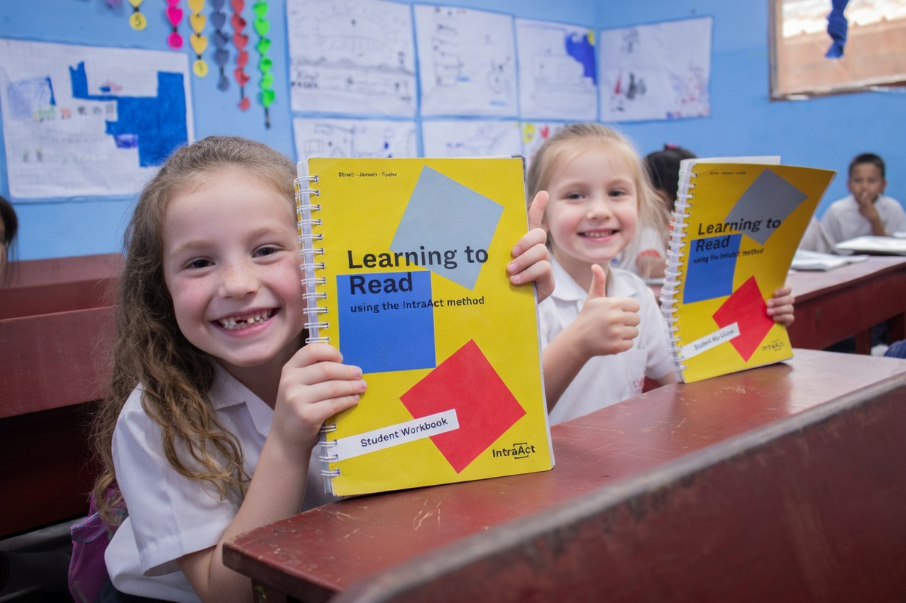

A structured literacy approach grounded in cognitive science and the science of reading.
The IntraAct method provides teachers with a structured framework for teaching reading that focuses on three core areas: decoding, fluency, and comprehension.
Developed by psychologists Fritz Jansen and Uta Streit, the method is based on cognitive neuroscience research into how the brain learns to read. It translates that science into practical, classroom-ready instruction.
The IntraAct method aligns with the "Big Five" of reading instruction identified by the National Reading Panel.
Students learn letter-sound relationships in a structured, sequential order that builds progressively from simple to complex patterns.
Teachers lead students through focused reading exercises designed to reinforce decoding skills and develop reading fluency in a supportive environment.
Students receive real-time guidance during reading, helping them develop accurate reading habits and self-correction strategies.
Through structured repetition and practice, students build automaticity in word recognition, freeing cognitive resources for comprehension.
Teachers guide students through short, focused reading exercises that strengthen decoding skills and reading fluency. The method is designed to be practical and easy to implement within existing classroom routines.

The IntraAct approach aligns with decades of research in cognitive science and the science of reading.
Built on research showing that explicit, systematic instruction is essential for reading development, particularly for struggling readers.
Aligned with the National Reading Panel's findings on phonemic awareness, phonics, fluency, vocabulary, and comprehension.
Follows structured literacy principles that provide explicit, sequential, and cumulative instruction for all learners.
Explore the research and data supporting the IntraAct method's effectiveness in classrooms.